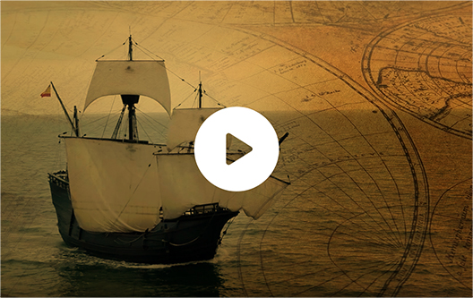

Origen & Destino
En Andalucía empezó todo

Proyecto Andalucía, Origen y Destino
 Sigue el Camino del Sol - V Centenario de la I Vuelta al Mundo
Sigue el Camino del Sol - V Centenario de la I Vuelta al Mundo
Sigue el Camino del Sol - V Centenario de la I Vuelta al Mundo
Hace 500 años Sevilla y Sanlúcar de Barrameda fueron el punto de partida de la 1º Vuelta al Mundo, una de las aventuras más extraordinarias de la Humanidad que convirtió a Andalucía en centro neurálgico del Imperio Español y en latido del corazón de Europa. Hoy como ayer, el territorio andaluz vuelve a apostar por un viaje histórico y con motivo de la efeméride de la hazaña de Fernando de Magallanes y Juan Sebastián Elcano se nos brinda una nueva oportunidad de conectarnos con el mundo y ser nexo de unión de pueblos a través del proyecto estratégico ‘Andalucía, Origen y Destino’, que desarrollará en los próximos años más de un centenar de acciones promocionales y ofrecerá a los viajeros experiencias turísticas sostenibles, accesibles y que apelen a las sensaciones.
Esta iniciativa trasciende fronteras y quiere convertir Andalucía en eje comercial y ‘destino’ del mundo, pero sin olvidar que fue también el ‘origen’, el lugar donde empezó todo. Por ello el proyecto se cimenta en la cultura, patrimonio y señas de identidad andaluzas para brindar al viajero vivencias inigualables, ligadas a la gesta aventurera y a sus principales escenarios. Es, además, una oportunidad de desarrollo que nace con un claro enfoque al sector empresarial y turístico de Andalucía.
Los productos turísticos vinculados a ‘Andalucía, Origen y Destino’ se han desarrollado en estrecha colaboración con las empresas y agencias de viaje andaluzas, que serán las grandes proveedoras de experiencias. Se han diseñado contenidos y planes para todo tipo de públicos. Permitirán a los viajeros que lleguen a Andalucía en busca del ‘origen’ visitar los lugares vinculados a la vida de los grandes protagonistas de la hazaña; degustar menús gastronómicos elaborados con los productos que vinieron tanto de Oriente como de Occidente; asistir a espectáculos teatrales y operísticos tematizados; realizar rutas y escapadas por el territorio andaluz; y rememorar los olores y esencias de otra época.
Queremos conmemorar más allá de las fronteras y límites un viaje que desde Andalucía cambió la forma de ver el mundo. Queremos llegar más lejos, llegar a todos como hace 500 años pero con los medios del s. XXI.
Sigue los pasos de los grandes navegantes y la senda de los descubrimientos.
Sigue el camino del sol
¡Ven a Andalucía!